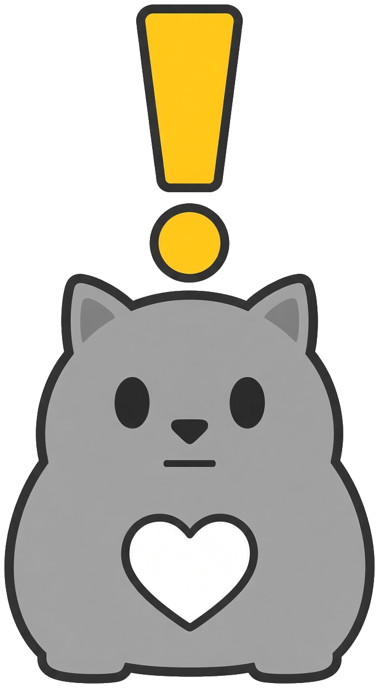
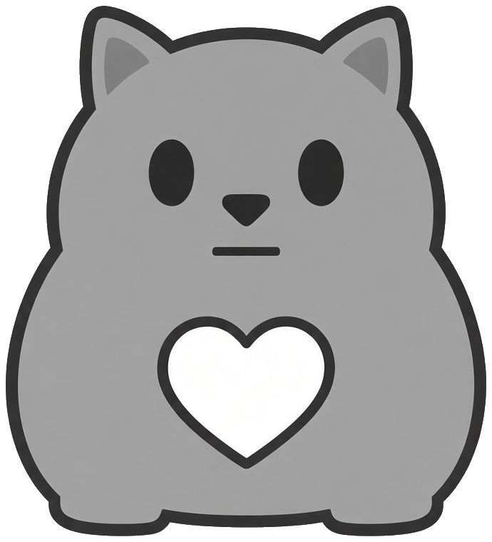

Every dot is a non-playable character. Move your cursor through them. They part. They come back. They always come back.
The yellow mark means an NPC has a quest for you. This one has exactly one step.
Read the questLaunched on StonkFun on Solana, quoted in Non-Playable Coin instead of SOL. Two grey faces, one chart.
Buy $NPCAT with $NPCNo roadmap. No utility. Just a cat made of everyone, holding the line.
The lore
It sat on the same rug for four hundred years. It supported the current thing. It answered every question with “...”. Then somebody paired it with $NPC on StonkFun and, for the first time in recorded history, it looked up.
Quest available
NPCAT launches on StonkFun as a reward coin: a small transfer tax on every trade collects into a pot, and StonkFun splits that pot across holders in the coin's paired asset. The paired asset is $NPC. Nothing to claim, nothing to stake. The exact tax rate and payout threshold are fixed at launch and will be quoted here from the token page.
Mechanism as described on stonkfun.xyz/rewards. This page will only ever quote the figures shown on the official NPCAT token page.
The pair
StonkFun lets a coin launch paired with anything. NPCAT launches paired with $NPC: every NPCAT trade is an NPC trade, and the chart reads in NPC.

$NPCATBase asset · Non-Playable CatHow to buy
Phantom or Solflare. Put a little SOL in it for fees.
NPCAT is bought with NPC, so the quote asset comes first.
Only ever use the official link from this page or the X profile. Check it twice.
Confirm. Sit. Stare. You are now one of the crowd.
No dumb questions
A meme coin on Solana about a non-playable cat. It launched on StonkFun paired with $NPC, the Non-Playable Coin. It has no utility and no roadmap.
On StonkFun a coin can trade against any asset instead of SOL. NPCAT trades against NPC, so you buy it with NPC and the price is shown in NPC.
NPCAT is a StonkFun reward coin. A transfer tax on every trade collects into a pot, and when the pot is worth paying out StonkFun splits it across holders in the paired asset, $NPC. There is no claim button and no staking; it lands in the wallet that holds NPCAT. The tax rate and threshold are fixed at launch and shown on the token page.
No.
No. It just sits there.
No. NPCAT is a community meme coin that uses StonkFun as its launchpad and $NPC as its quote asset. It is not endorsed by either.